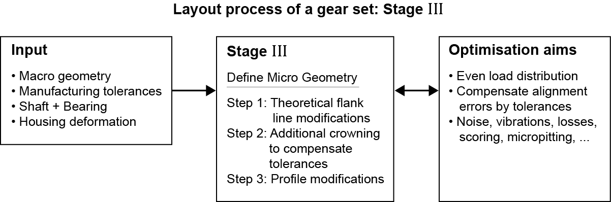

|
|
|


细加工修改（微几何）
确定齿廓修形和齿向修形是齿轮尺寸设计的最后且最复杂的阶段。此修饰变体生成器可通过快速直接地计算最佳修饰来节省你的时间和精力。

图14：
要调用功能，请选择工具栏中的图标 ，在菜单中选择，然后选择。
如果调用优化函数而未打开选项卡，则计算中将使用该选项卡中的默认设置。
English Original
Fine sizing modifications (microgeometry)
Sizing the profile and flank line modifications is the last and most complex phase in sizing a gear. This modification variant generator can save you time and effort by calculating the optimal modifications quickly and directly.
Figure 14.:
To call the function, select the icon in the tool bar, select in the menu and then select .
If you call the optimization functions without opening the tab, the default settings in the tab will be used in the calculation.